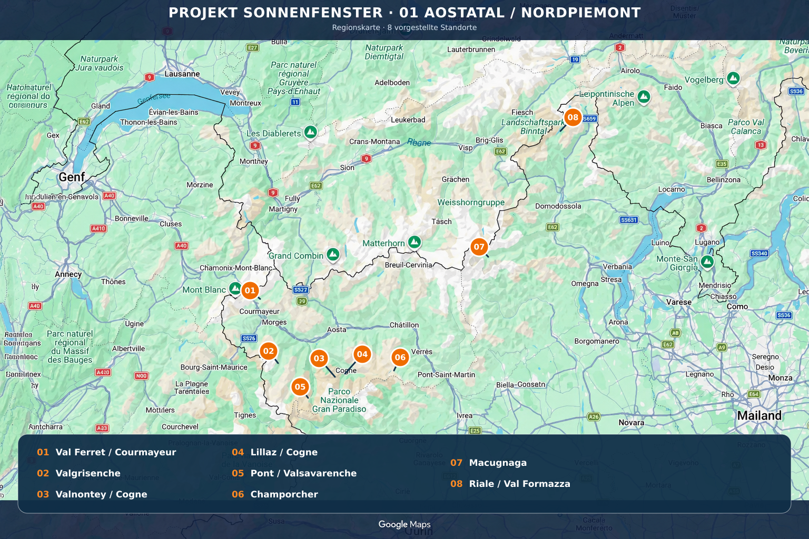

Die Region zuerst entscheiden
Wetterfenster prüfen – danach acht unterschiedliche Bergbasen vergleichen. Jeder Platz öffnet eine vollständige Sonnenfenster-Detailseite.
Gesamtprojekt: … Plätze · Musterregion: 8 Plätze
Unsere 8 Basen
8 von 8Keine passende Basis gefunden.